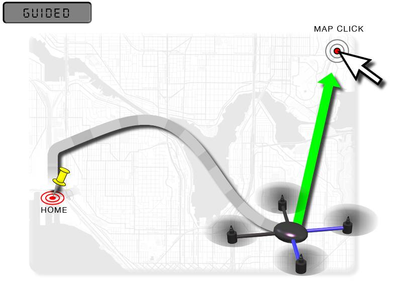

Guided Mode¶
Guided mode is a capability of Copter to dynamically guide the copter to a target location wirelessly using a telemetry radio module and ground station application. This page provides instructions for using guided mode.
Note
Guided Mode can also be used by LUA scripts and companion computers to command vehicle movement and navigation.
Overview¶
Guided mode is not a traditional flight mode that would be assigned to a mode switch like other flight modes. The guided mode capability is enabled using a ground station application (such as Mission Planner) and telemetry radio (such as a SiK Telemetry Radio). This capability allows you to interactively command the copter to travel to a target location by clicking on a point on the Mission Planner Flight Data map. Once the location is reached, the copter will hover at that location, waiting for the next target. Follow Me mode also uses Guided Mode to make the copter follow the pilot around the field.
{kind=link}
What you’ll need¶
To use guided mode, you’ll need a telemetry radio allowing your computer and autopilot to communicate during flight, a ground station computer or tablet, and a ground station application such as Mission Planner.
Instructions¶
Set up your copter at the field and establish a MAVLink connection over wireless telemetry between your copter and your laptop.
On your laptop, using the software that came with the telemetry module, make sure that it’s working and that you have a GPS lock.
Take off in Stabilize Mode and once at a reasonable altitude, switch to Loiter.
In the Mission Planner Flight Data screen map, try right-clicking on a nearby spot and select “Fly to Here”.
You will be asked for a guided mode altitude. Enter an above home altitude in meters.
{kind=link}
A “Guided” target should appear on the map and the orange line (which indicates the target heading) should point to this guided target.

The vehicle should fly to the target location and wait there until you enter another location or switch to another mode.
Note
On Mission Planner there is no need to set up one of your flight modes as “Guided”. This may not be the case for other Ground Control Stations.
Guided Mode Options¶
The GUID_OPTIONS parameter allows several guided mode behavior changes:
Bit |
Meaning |
|---|---|
0 |
Allow Arming from Transmitter |
2 |
Ignore pilot yaw input |
3 |
SetAttitudeTarget_ThrustAsThrust |
Bit 3 makes interpretation of SET_ATTITUDE_TARGET MAVLink command’s thrust field as pure thrust from 0 to 1 , instead of a climb rate. See Commands in Guided Mode
The :ref:GUID_TIMEOUT<GUID_TIMEOUT> parameter holds the timeout (in seconds) when the vehicle is being controlled using attitude, velocity and/or acceleration commands. If no commands are received from the companion computer for this many seconds, the vehicle will slow to a stop (if velocity and/or acceleration commands were being provided) or hold a level hover (if attitude commands were provided). The default setting is 3 seconds.
Guided_NoGPS¶
This variation of Guided mode does not require a GPS but it only accepts attitude targets. Because it does not accept position or velocity targets like regular Guided mode it is generally not useful for regular users. This mode was created for use by companion computers that may want to fly the vehicle as if it was in AltHold mode.
Note
Guided_NoGPS does not allow a vehicle to hold position without a GPS (i.e. non-GPS navigation). For information on non-GPS navigation see this wiki page